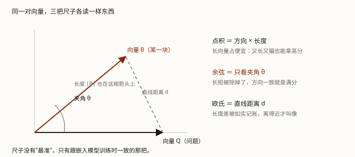

块切好了（第 4 课），接下来每一块都要压成一根向量，问题也压成一根，然后比大小排序。
听起来就是"算个距离"。可真做起来会撞上一个问题：换一把尺子，排名就变了——同一组候选，点积选了段 B，余弦选了段 A。
哪把尺子才对？没有"最准"的尺子，只有跟嵌入模型训练时一致的那把。
学完这课，你能说清：嵌入模型是哪来的、三把尺子各在量什么、尺子怎么选、以及它什么时候会把"像"当"对"。
嵌入 ＝ 把一段文字压成一根向量；相似度 ＝ 定义两根向量"像不像"的算法。
尺子只有三把，而且必须跟嵌入模型训练时用的一致——模型学出来的"像"和你排名用的"像"得是同一个定义。
第 1 课分过两种"嵌入"，这里认领第二种：文本嵌入——把一整段文字压成一根向量的，是另一个小模型，跟最后答题的那个模型互不相干。一条 RAG 链上跑着两个模型，各干各的。
它干的活很窄：让说得像的文字，压出来挨得近。"向量挨得近"就是"意思相近"的操作定义。它压完就完事——向量存进索引里等查，这个模型本身不再出场。
它一生出场两次：建库时把每一块压成一根向量存进索引，提问时把问题压成一根去比。压完就退场，答案里没有它的影子。压出来的是一串固定长度的数字——多长由模型定，各家不同，这就是"维度"。
所以别把它想成"小号的答题模型"：它不生成文字、不懂逻辑，只会一件事——把一段话摆到向量空间里一个位置上。
后面所有的翻车，都源于这一个动作的局限。
两根向量比"像不像"，常见的就三种算法。它们量的东西不一样：
| 尺子 | 它量什么 | 性格 |
|---|---|---|
| 点积 | 方向 × 长度 | 长向量占便宜：又长又偏也能拿高分 |
| 余弦 | 只有夹角（方向） | 长短被除掉了，方向一致就是满分 |
| 欧氏 | 两点间的直线距离 | 长度差被如实记账，离得近才叫像 |
（点积在 LLM 底层课里见过：注意力比"像不像"用的就是它。同一个动作，那里比 token、这里比整段。）
三把尺子其实是一家人。点积有个恒等式：点积 ＝ 方向合不合 × 箭头有多长。余弦就是把"有多长"除掉之后剩下的那半，欧氏则把长度差换了个方向记账。
所以它们的分歧永远在同一个地方：长度算不算数。

差别不是纸面上的。同一组候选，换尺子就换名次——脚本实测（四个手写向量，问题在正右方）：
点积榜（大→小）： 段 B > 段 A > 段 C > 段 D
余弦榜（大→小）： 段 A > 段 B > 段 C > 段 D
欧氏榜（近→远）： 段 A > 段 C > 段 D > 段 B
→ 三个榜的冠军不一样：【点积选了段 B，余弦和欧氏选了段 A】。
→ 变化最大的是段 B：点积第 1、余弦第 2、欧氏垫底——同一个向量，
三把尺子给出三种待遇，分歧全在【长度算不算数】上。段 B 是"又长又偏"的那种向量：点积被它的长度骗了，欧氏被它的长度拖远了，只有余弦不看长度。你的候选里永远躺着几个段 B——选错尺子，它们就会冒到前面去。
另一半故事在段 A 身上：它方向完全一致，却在点积榜只排第二——方向对但偏短的向量，会被长度淹没。
真实的库不是四个二维向量，而是成千上万个上千维向量——但"又长又偏"在上千维里照样存在，只是没法画在纸上。玩具赢在能看见：哪个向量因为什么占了便宜，一眼就数得出来。
既然换尺子换名次，怎么定？Pinecone 的口径就一句：尺子跟嵌入模型训练时用的一致。训练用什么度量"像"，检索就用什么度量"像"——否则模型学出来的"像"和你排名用的"像"不是一个定义。
两个现成的例子：all-MiniLM-L6-v2 训练用的是余弦，索引就配余弦；msmarco-bert-base-dot-v5 训练用点积，官方直接写明只支持点积。
还有一个能省掉一半纠结的事实：把每个向量缩到长度 1 之后，点积和余弦给出完全一样的名次——数学上是同一件事。工具里看到"归一化点积"和"余弦"两种说法，别当成两种方法去调参。
要是查不到模型用的哪把尺子（闭源模型常常不写），怎么办？Pinecone 给的次序也是这样：先查、查不到再拿自己的评测集试。注意是"拿评测集试"，不是"三把都跑一遍谁分高用谁"——后者在评测集小的时候，拟合的是噪音。
余弦的取值范围是 −1 到 1：1 是方向完全一致，0 是无关，−1 是正好相反。它是个几何量，不是"相关的概率"——0.8 不代表"80% 相关"，跨模型、跨语料的余弦分也不可横比。
看分数的正确姿势是看名次和落差：第 1 名和第 2 名差多少，比"绝对值是多少"有用得多。
尺子选对了，嵌入还是会翻车。翻在模型侧：它量的是"像不像"，不是"对不对"——名字像不等于内容相关，这是 RAG 最常见的翻车点。三张脸：
同名不同物。"苹果"的水果和公司，在向量空间里几乎是同一个位置。问"苹果的售后政策"，水果味的段落照样排得很前——它们确实"像"，只是像错了地方。
没见过的词。新术语、生僻缩写、内部黑话（"P7 晋升答辩"），训练时没见过，它们的向量位置不可靠——检索时忽远忽近，全看运气。
细粒度差被抹平。2107 和 2108、A4 和 A5、3% 和 8%——这种"就差一点点"的东西，在向量空间里几乎重叠。指望嵌入分辨它们，不如指望字面匹配。
这三张脸有个共同的判据：凡是"必须逐字对上"的（编号、型号、金额、人名），别指望嵌入。它们各有各的救法——字面匹配怎么跟嵌入搭档，是第 1 课动手那节点过的"两个一起用"，下一门课展开。
顺带把边界划清：这三张脸都是检索侧的失手——答案压根没进提示词。另一种翻车是"进了提示词但没被用上"，那不是嵌入的锅。分不清这两类的时候，先用第 9 课那面镜子：把提示词打出来看一眼。
嵌入模型不是只用一个就万事大吉：换模型的理由很多（领域适配、多语言、效果更好）。但换的代价是硬的：不同模型的向量不在同一个空间——同一个句子，两个模型压出的向量方向都对不上，放在一起比大小毫无意义。
所以换模型 ＝ 新建一个库，全部重算。老库的向量一个都搬不过来。
什么时候值得付这个代价？领域文档明显对不上（法律、医疗这类专业语料）、要支持多语言、或者新模型在你自己的评测集上真的更好——先量出差距再换，别凭口碑。量的方法是后面第 9、10 课的活。
工具对这件事的态度值得看一眼。RAGFlow 早期版本是硬锁：文档原话"Once you have selected an embedding model and used it to parse a file, you are no longer allowed to change it"。现行版本改成了兼容性抽查：换模型要过一关（维度得一致、抽样向量的平均余弦 ≥ 0.9 才放行），但存盘后不会自动重嵌旧块——也就是说，库里会留下两代向量混着的隐患。
工具松了口，正确做法没变：换模型就重建库。
脚本在工作区：exercises/rag/0005-similarity-metrics.py。它用四个手写的二维向量，把三把尺子的读数摆在一起看。它不调任何模型——向量是手写的，但"尺子在量什么"跟上千维的真实向量一模一样。
python exercises/rag/0005-similarity-metrics.pyWindows 终端若中文乱码，先执行 chcp 65001。下面是读数那段的输出摘录（跑了就有完整的）。
[1] 同一对向量，三把尺子各在量什么（问题 Q=(1,0) vs 各段）
点积↑大好 余弦↑大好 欧氏↓小好 向量
段 A 1.200 1.000 0.200 (1.2, 0.0)
段 B 3.000 0.894 2.500 (3.0, 1.5)
段 C 0.500 0.707 0.707 (0.5, 0.5)
段 D 0.000 0.000 2.236 (0.0, 2.0)三处要看懂：
脚本的第二段演示"换尺子换名次"。第三段把每个向量缩到长度 1 再比一遍：
[3] 归一化之后：点积 ≡ 余弦
把每个向量缩到长度 1，再比：
段 A 归一化后 (1.0, 0.0) 点积=1.000
段 B 归一化后 (0.894, 0.447) 点积=0.894
段 C 归一化后 (0.707, 0.707) 点积=0.707
段 D 归一化后 (0.0, 1.0) 点积=0.000
名次： 段 A > 段 B > 段 C > 段 D （和余弦榜完全一样）看名次那一行：缩到长度 1 之后，点积榜和余弦榜逐位相同——长度这个变量被除掉了，两把尺子量的自然只剩同一个东西。
六道题，把"尺子怎么选、模型怎么失手、换模型什么代价"各过一遍。
Q1 向量库里该用哪种相似度算法？
Q2 点积和余弦最本质的差别是什么？
Q3 问"苹果的售后政策"，水果介绍排得很前。这属于哪种失手？
Q4 换了一个嵌入模型，旧向量为什么不能接着用？
Q5 工具里"归一化点积"和"余弦"两种设置，该怎么理解？
Q6 内部黑话"P7 晋升答辩"检索不到，最可能因为什么？
回上一课：RAG · 第 4 课 · 建库：清洗与切块（块切好了才轮到向量）
顺着往下：第 6 课 · 多路召回：混合检索与重排（在写）——嵌入的失手，靠字面匹配和重排来补
相关：RAG · 第 9 课 · 两种典型翻车（检索翻没翻，怎么判）
术语表：相似度尺子 · 文本嵌入 · 切块 / 重叠